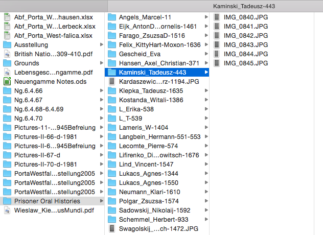
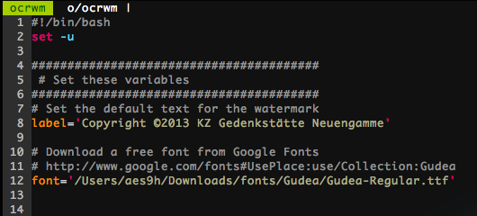

I have accumulated nearly 2000 images, all scans of documents, relating to the dissertation. One goal of the project is to make these documents open and available in an Omeka database. In order to more correctly attribute these documents to the archives where I got them, I need to place a watermark on each image.
I also need the content of the documents in a format to make it easy to search and copy/paste.
The tools to do each of those steps are readily available, and easy to use, but I needed a script to put them together so I can run them on a handful of images at a time, or even hundreds at a time.
To layout the solution, I’ll walk through the problem and how I solved it.
When at the Neuengamme Concentration Camp Memorial Archive near Hamburg in the summer of 2013, I found about 25 testimonials of former inmates. In most cases I took a picture of the written testimonial (the next day I realized I could use their copier/scanner and make nicer copies). So I ended up with quite a number of folders, each containing a number of images.

So the goal became to water mark each of the images, and then to run an OCR program on them to grab the contents into plain text.
Watermark
There are many options for water marking images. I chose to use the incredibly powerful ImageMagick tool. The ImageMagick website has a pretty good tutorial on adding watermarks to single images. I chose to add a smoky gray rectangle to the bottom of the image with the copyright text in white.
The image watermark command by itself goes like this:
width=$(identify -format %w "/path/to/copies/filename.png"); \
s=$((width/2)); \
convert -background '#00000080' -fill white -size "$s" \
-font "/path/to/font/file/font.ttf" label:"Copyright ©2014 Ammon" miff:- | \
composite -gravity south -geometry +0+3 - \
"/path/to/copies/filename.png" "/path/to/marked/filename.png"
This command can actually be run on the command line as is (replacing the paths to images the font file, and copyright text of course). I’ll explain the command below.
The first line gets the width of the image to be watermarked and sets it to the variable “width”. The second line gets half the value of the width, and sets it to the variable “s”.
The third line starts the ImageMagick command (and is broken onto several lines using the \ to denote that the command continues). The code from ‘convert’ to the pipe ‘|’ creates the watermark, a dark grey rectangle with white text at the bottom of the image.

OCR
Most of the images I have are of typed up documents, so they are good candidates for OCR (Optical Character Recognition), or grabbing the text out of the image.
OCR is done using a program called tesseract.
The tesseract command is relatively simple. Give it an input file name, an output file name, and an optional language.
tesseract "/path/to/input/file.png" "/path/to/output/file" -l deu
This will OCR file.png and create a file named file.txt. The -l (lowercase letter L) option sets the language to German (deut[sch]).

The Script
The script is available at my GitHub repo: https://github.com/mossiso/ocr-watermark
Here is how to use the script.
Download the ocrwm file and put it in the directory that has the image files.
Open the file with a text editor and set the default label to use in the watermark. If desired, you can also specify a font file to use.

On the command line (the terminal), simply type:
bash ocrwm
At it’s basic this will make a “copies” directory and put in there a copy of each image file (it will find images of the format JPG, GIF, TIF, and PNG in the directory where you run the command).
To OCR and Watermark the images do:
bash ocrwm -ow
This will make the copies as above, but will also create a directory named “ocr” and a directory named “marked” and add respective files therein.
You can also create a single pdf file from the images in the directory like so:
bash ocrwm -pow
Adding the l (lowercase letter L) option allows you to set the text in the watermark.
bash ocrwm -powl "Copyright ©2014 Me"
There is an option to not copy the files. This is useful if the files have been copied using this script previously (say you ran the script but only did water marks and not OCR, then to just do the OCR you can run the script again but not have to copy the files again).
bash ocrwm -co
Gotchas
Here are things to look out for when running the script.
By default, the script will run the OCR program, tesseract, with German as the default language. You can change that to English by deleting the “-l deu” part on the line that calls tesseract. The list of language abbreviations and languages available are in the tesseract manual (or on the command line type).
man tesseract
PDFs
A few times I had PDFs as the original format to work with. In most cases these were multi-page PDFs. In order to use the script with these, I first needed to break out each page of the PDF and convert it to a PNG format. See here for a reason to choose PNG over other formats.
The ImageMagick command ‘convert’ will take care of that:
convert -density 600 -quality 100 original.pdf newfile.png
Depending on how many pages are in the PDF, the command can take quite a while to run. For a 30 page PDF, it took my laptop about 5 minutes. The end result is a PNG image for each page incrementally numbered beginning with zero. If the PDF above had four pages, I would end up with the following PNGs: newfile-0.png, newfile-1.png, newfile-2.png, newfile-3.png
Now I could run the ocrwm script in the directory and get OCR’ed and watermarked images. In this case I could leave off the ‘p’ option because I began with a PDF with all pages combined.
bash ocrwm -ow
Feel free to download the script, make changes or improvements, and send them back to me (via the github page).


{kind=link}
{kind=link}
{kind=link}
{kind=link}
{kind=link}
{kind=link}
{kind=link}
{kind=link}